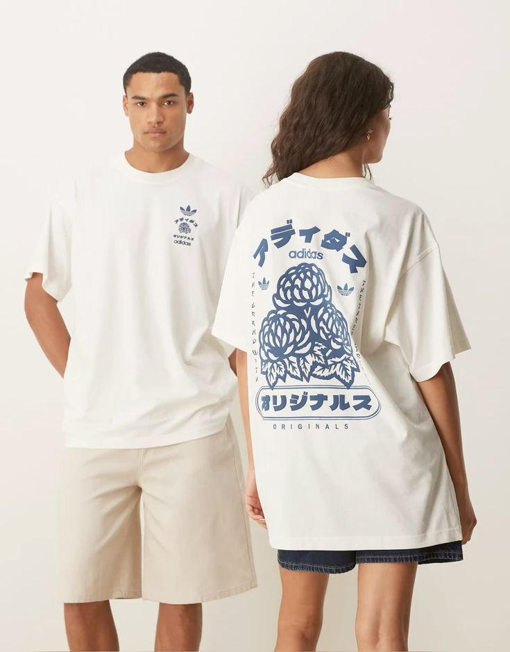
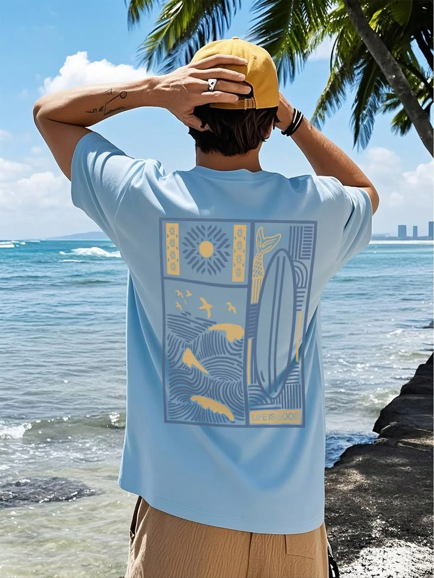
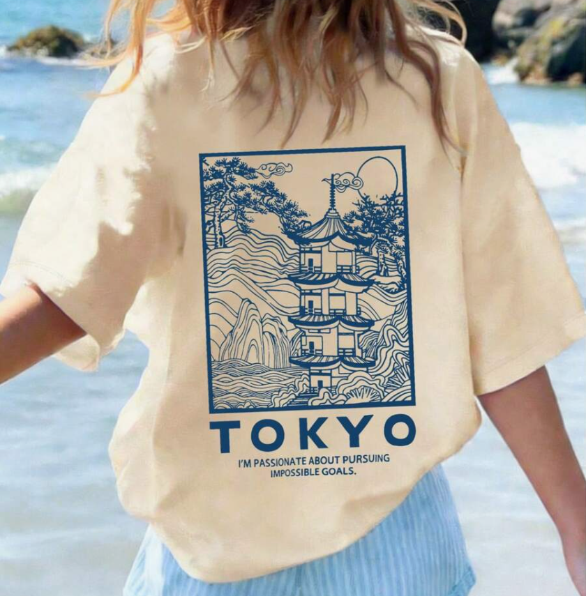

Remera básica
Remera cómoda y minimalista.
 ONIXIA
ONIXIA
En esta sección vamos a conocer productos,ofertas y novedades
Remera cómoda y minimalista.

Remera urbana de corte holgado en color verde oliva, confeccionada en algodón pesado, que lleva la palabra "ESSENTIALS" en la espalda alta acompañada por una cuadrícula blanca con nueve ilustraciones detalladas de cafetería (cafeteras, tazas y granos).

Remera de calce oversized en tono marfil con cuello redondo cerrado y mangas anchas, decorada con múltiples estampas e insignias asimétricas de estilo playero y desértico impresas en tinta verde oscuro tanto en el frente como en las mangas.

Prenda urbana de corte holgado confeccionada en algodón suave. Se destaca por combinar el estilo deportivo clásico con el arte tradicional japonés.

Remera de estilo surfero en color azul celeste claro y moldería clásica, la cual cuenta en la espalda con un gran recuadro dividido en paneles que muestran ilustraciones de olas, un sol, aves marinas y una tabla de surf en tonos amarillos y grises.

Remera holgada de base clara (off-white) con estética de arte asiático tradicional, destacada por un gran diseño lineal azul en la espalda que ilustra una pagoda japonesa entre montañas, coronado abajo con la palabra "TOKYO" y una frase motivacional.